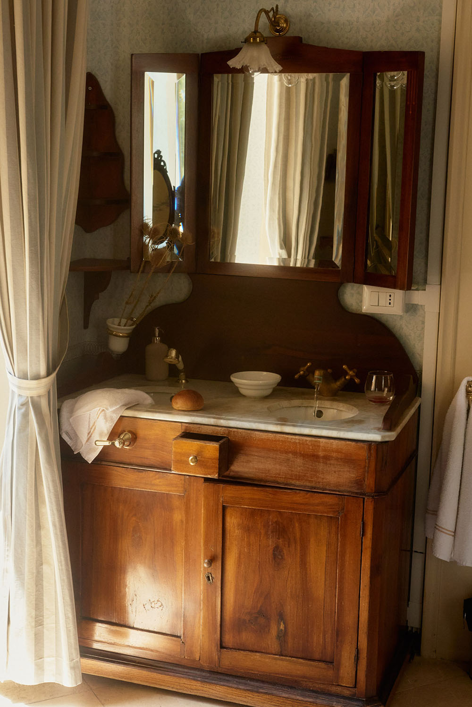
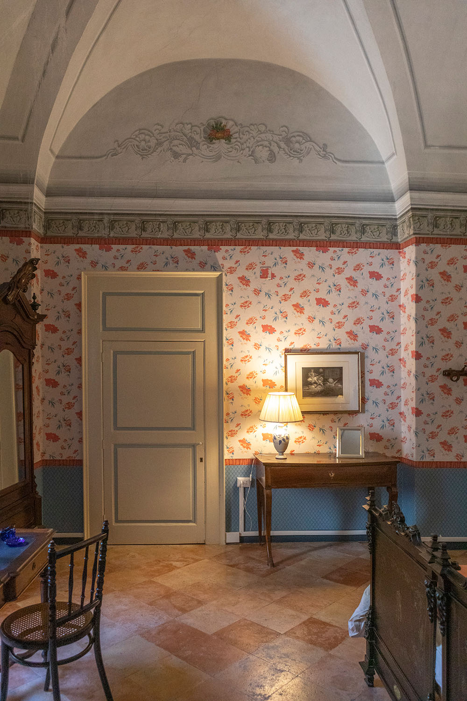
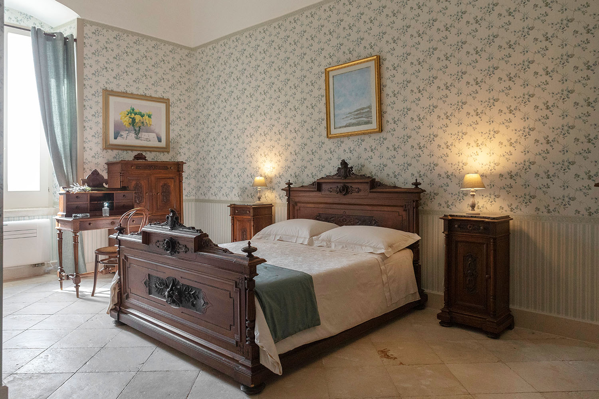
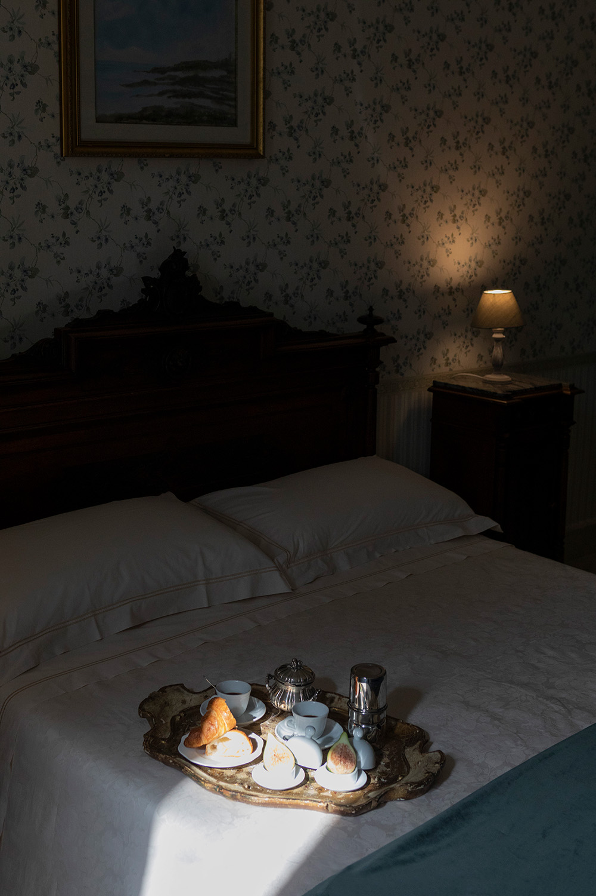

Residenza
Negli ambienti antichi della Villa, la famiglia Fenicia ha creato una Residenza esclusiva con quattro camere per gli ospiti e la possibilità di immergersi in spazi dagli arredamenti unici e godere del grande Salone di Gala, il Soggiorno, la Sala da Pranzo, l’ampio terrazzo e la nuova piscina.
Durante il soggiorno la colazione il cibo è una parte fondamentale dell’esperienza. La mattina gli ospiti possono scegliere il luogo della Villa dove fare colazione. Qui i Fratelli Montaruli preparano le loro marmellate, accompagnate dalle panificazioni a base di grani antichi e le preparazioni stagionali.
Durante il soggiorno la colazione il cibo è una parte fondamentale dell’esperienza. La mattina gli ospiti possono scegliere il luogo della Villa dove fare colazione. Qui i Fratelli Montaruli preparano le loro marmellate, accompagnate dalle panificazioni a base di grani antichi e le preparazioni stagionali.
Suite Federica
La suite più esclusiva della Villa è il raffinato scrigno blu dai soffitti affrescati e i putti sonanti del letto in ottone. Ma ancora più incredibile iconica è la sua grande stanza da bagno privata, unica per dimensioni e stile, dove ci si può rilassare nella vasca o sulla chaise longue che l’arreda, tra la chianca di Trani del pavimento e gli affreschi del soffitto.
 1/3
1/3
 2/3
2/3
 3/3
3/3
 1/4
1/4

2/4
 3/4
3/4
4/4
1/4
Suite Vittoria
Ogni giorno quella che in origine era la stanza padronale si inonda di luce. Grazie alla vista sull’agrumeto e all’accesso diretto al terrazzo, si possono ammirare le stupende albe e tramonti che scandiscono le giornate della Villa.
Con il recente restauro, la torretta di avvistamento al suo interno è stata trasformata in un piccolo bagno privato, insieme al letto a baldacchino, ai mobili a tema floreale e il lavabo d’epoca.
Suite Giuseppina
Il rosso dei papaveri della carta da parati si sposa con il blu delle tende nella suite con vista sul giardino di ingresso.
I suoi ospiti vivono l’intensità dei profumi degli agrumi e del gelsomino su cui si affacciano le finestre, avvolti dagli affreschi dei soffitti e il pavimento in cotto.
 1/3
1/3

2/3
 3/3
3/3

1/3
 2/3
2/3

3/3
1/3
Suite Maria Giulia
Atmosfera accogliente, eleganza e armonia nella suite dalle pareti verdi oliva decorate a fiori, che riprendono il tema della fusione armonica tra gli interni della Villa e la natura. Dalle sue finestre infatti, la vista si perde sul vigneto e la campagna della Murgia.
Salone di gala
Ad uso esclusivo degli ospiti, il Salone di Gala è l’emblema dello stile della Villa. I quattro angoli sono illuminati dal grande lampadario sospeso sull’isola fiorita al centro del Salone. Dal pavimento in cotto al suono del carillon antico, ogni dettaglio esalta l’autentica bellezza di questo ambiente.


Sala da pranzo
La fitta giungla di canne di bambù che adorna le pareti continua il leitmotiv della natura che si fa strada all’interno delle mura. Il grande tavolo accoglie fino a 10 persone per i pranzi e le cene degli ospiti della Residenza, oltre che per i tradizionali eventi di Home Restaurant.
Salotto
Sobrio ed elegante, il Salotto permette a tutti l’accesso sul grande terrazzo. Il tavolo per la colazione ed il divano, così come il frigobar e i giochi da tavola, lo rendono uno spazio di ritrovo ideale.


Terrazzo
Protetto dal maestrale che soffia sulla Villa rinsavendo la natura, è un luogo di pura tranquillità. Il tendaggio e i ventilatori ne garantiscono la vivibilità anche nelle giornate più calde, mentre ci si rilassa sull’amaca, facendo una partita a scacchi o ammirando la vista sulla campagna che sfocia verso la collina che accoglie Ruvo di Puglia.
Piscina
La nuova piscina, circondata dal boschetto di quercia Vaollonea, l’uliveto e gli alberi di alloro, gode del fresco dell’ombra e della bellezza della vista panoramica.

 Prenota una stanza
Prenota una stanza